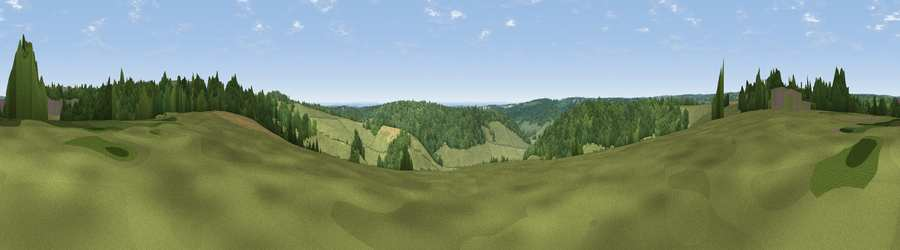

Viewpoint near Cadmore End
#35130 in England · top 34% of its area beats it · near Cadmore EndWhere it is
The exact computed spot (SU 78675 92275). Click the marker for map links.
The view, rendered

A 360° render of this exact spot computed from the terrain model, tree cover and land cover — summer colours, afternoon light, calibrated against photographs of famous viewpoints. Real trees, hedges and buildings will differ in detail.
The panorama
Grey silhouette: terrain skyline in each direction (720 bearings, Earth curvature and refraction included). Dashed green: skyline with trees (+15 m) and buildings (+8 m) as obstacles. Blue strip: how far the ground is visible on each bearing.
Where the view opens
Wedge length = distance to the farthest visible ground on that bearing (vegetation-aware). Rings at 10, 25 and 50 km.
What fills the view
55% grassland · 40% woodland · 5% cropland
Angular shares of the visible panorama (visual magnitude), not map area. Landscape diversity 0.38 (0–1 Shannon).
Key numbers
More beautiful places nearby
The staircase of upgrades: each row has a higher view potential than everything closer. Driving times are estimates from straight-line distance, calibrated against real road routing — check an actual route before setting out.
| Place | Direction | Drive | Score |
|---|---|---|---|
| Viewpoint near Turville | SW · 4 km | ~9 min | 35.7 |
| Viewpoint near Bledlow Ridge | NNE · 6 km | ~13 min | 37.0 |
| Viewpoint near Fawley | SW · 6 km | ~13 min | 48.8 |
| Viewpoint near Kingston Blount | NNW · 7 km | ~15 min | 67.4 |
| Viewpoint near Kingston Blount | NNW · 8 km | ~15 min | 70.1 |
| Viewpoint near Lewknor | NW · 8 km | ~16 min | 74.4 |
| Coombe Hill Monument | NNE · 16 km | ~28 min | 75.5 |
| Beacon Hill | SW · 48 km | ~69 min | 76.7 |
51.62380, -0.86489 · source: screening · position refined by local search. Computed location — check access rights before visiting.